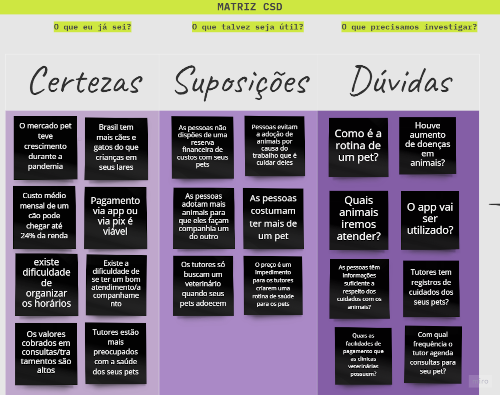

E-commerce Vets Haustier
Etapa 2 - Definição
SEMANA 5 - Definições
Design Thinking / Stanford /DEFINIR
FASE DEFINIÇÃO- DEFININDO O PROBLEMA
Objetivo e Matriz CSD
A partir das pesquisas realizadas foi possível mapear o público e definir qual o problema a ser resolvido e o que precisa ser criado para isso.
Ferramentas: Matriz CSD e Persona
Matriz CSD
Problema
Definição do problema a ser resolvido
O problema a ser solucionado é como criar o melhor aplicativo-ecommerce para ajudar o tutor a agendar serviços veterinários domiciliares e serviços remotos de forma online, por exemplo, um agendamento de uma teleorientação para sanar dúvidas referentes a como medicar corretamente um pet. Dando comodidade e segurança ao tutor e ao pet, porque sabemos que ir até uma clinica veterinária pode ser muito trabalhos e estressante. E isso é um problema para as pessoas que tem uma rotina muito cheia, que tem que conciliar trabalho e outros afazeres e não dispõem de tanto tempo para levarem seus pets até uma clinica. Além de que, existem alguns riscos de infecções e contaminação no contato com outros pets no consultório. Alguns tutores esperam os sintomas do pet piorarem para chamar um veterinário, e essa prática pode resultar em problemas mais graves. Com o aplicativo, basta chamar o veterinário pelo app em poucos cliques.
Personas
Personas / Jornada do usuário
Com os dados coletados por meio dos métodos e ferramentas anteriores foi possível criar as 3 Personas, para guiar as decisões de funcionalidades e interface e assim partir para suas necessidades.
Contexto dos usuários
Após a definição das personas, foi possível deixar claro seus principais pontos de conflitos e possíveis soluções. Assim foi possível encontrar problemas e oportunidades para a resolução de problemas de acordo com os diferentes perfis. Essa etapa foi essencial para entender em qual contexto e momento a solução poderia ser interessante para aquele usuário. A partir disso consegui começar a idear propostas que melhorassem sua experiência nos pontos chave daquelas necessidades em particular.
Principais oportunidades encontradas para os tutores
- Agenda online para acessar em qualquer lugar via app;
- Oferecer ao tutor fácil acesso aos valores dos procedimentos mais comuns nos atendimentos prestados pelo veterinário;
- Sistema com veterinário disponível para sanar dúvidas sobre sintomas e sobre primeiros socorros;
- Fácil acesso á formação e cursos do profissional;
- Oferecer acesso a uma descrição mais humanizada dos profissionais para criar simpatia com os clientes.